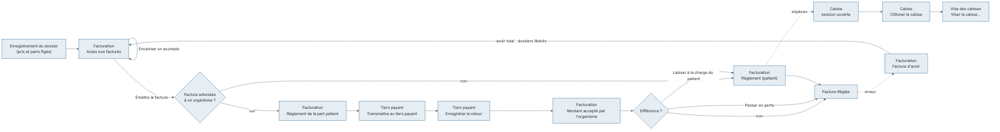
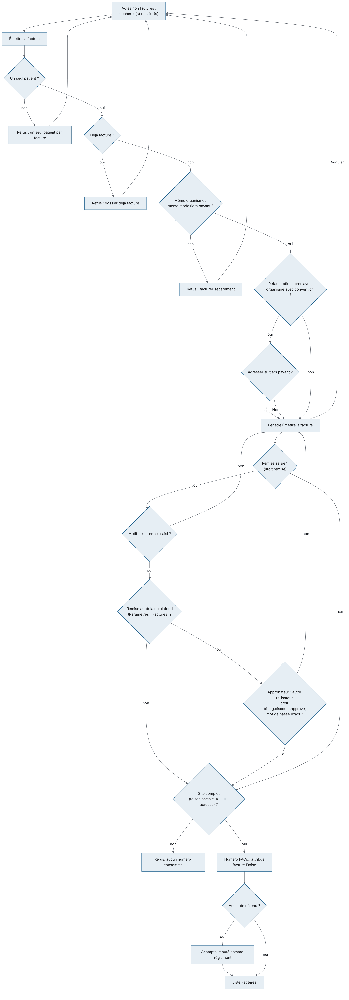
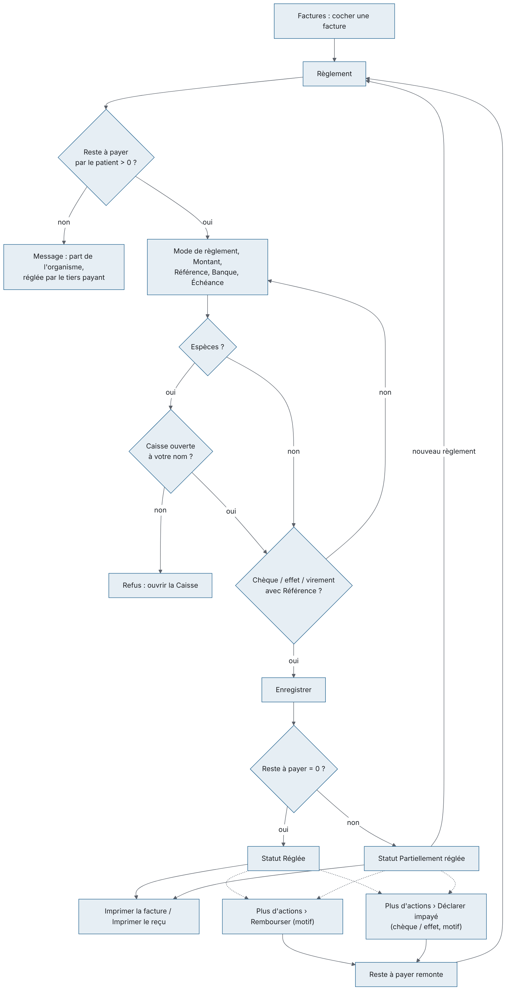
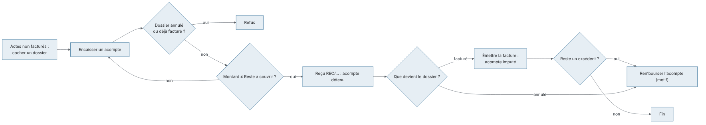
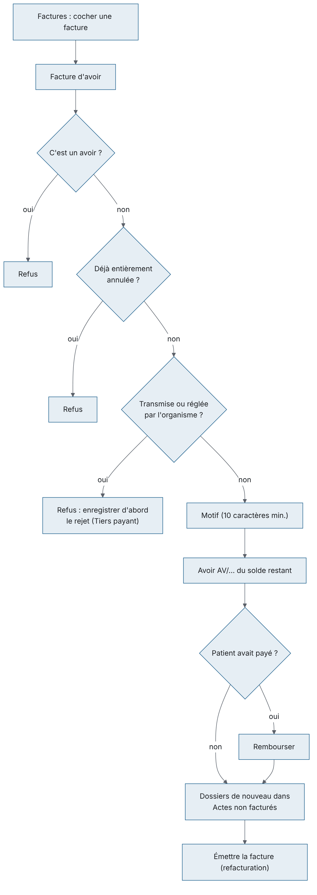
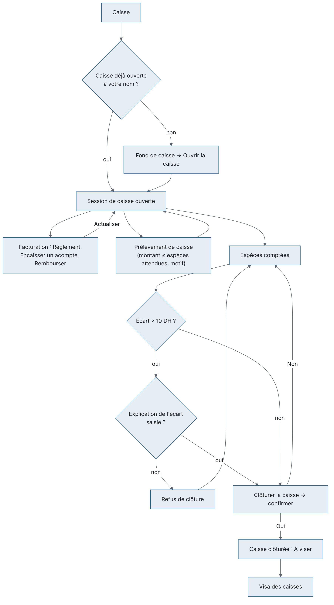
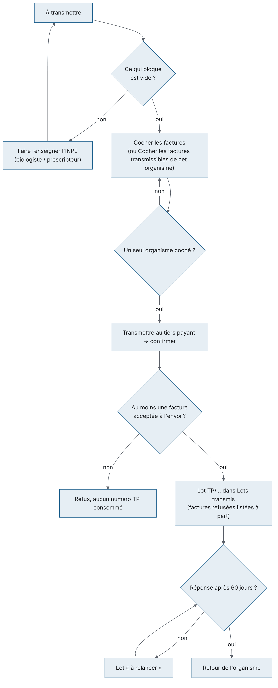
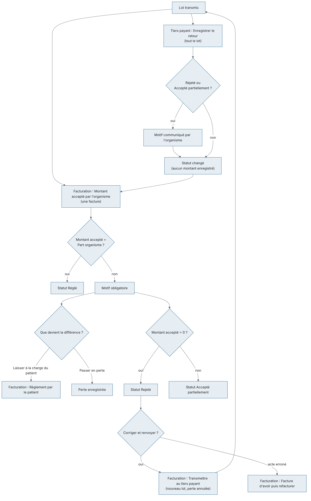
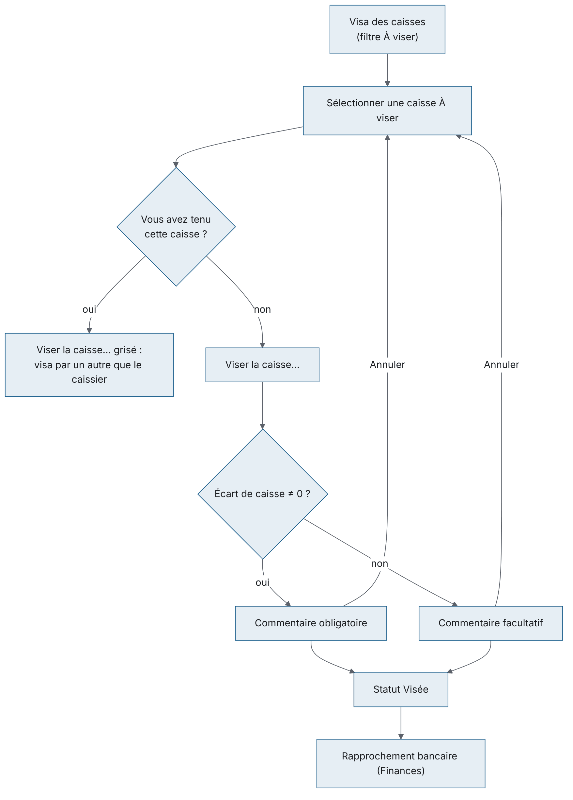

But : ce chapitre couvre l'argent du laboratoire : la facture et l'avoir, les acomptes, l'encaissement au comptoir, la caisse de chaque opérateur, les bordereaux envoyés aux organismes (CNSS, CNOPS, mutuelles…) et le visa des caisses par le responsable.
Qui l'utilise :
| Rôle (par défaut) | Ce qu'il fait ici |
|---|---|
| Secrétariat / accueil | Émet les factures, encaisse règlements et acomptes, tient et clôture sa propre caisse avec son comptage. Ne déclare pas d'impayé. |
| Comptabilité | Tout ce que fait l'accueil, plus remises, avoirs, remboursements, déclaration des chèques et effets impayés, tiers payant (bordereaux, retours, montants acceptés) et visa des caisses ; approuve la remise d'un collègue au-delà du plafond. |
| Administrateur | Tout, y compris le format d'impression des factures et le plafond des remises (Paramètres › Factures). |
| Biologiste responsable | Consulte Facturation et Tiers payant, vise les caisses, approuve une remise au-delà du plafond ; n'encaisse pas. |
Écrans, dans le menu :
| Menu | Groupe du menu | Raccourci par défaut |
|---|---|---|
| Facturation | Facturation | Ctrl+9 |
| Caisse | Facturation | Ctrl+0 |
| Tiers payant | Facturation | aucun (on peut en définir un) |
| Visa des caisses | Finances | aucun (on peut en définir un) |
et l'onglet Factures de Administration › Paramètres (format d'impression des factures).
Liens avec les autres modules : les prix et la répartition organisme / patient viennent de l'enregistrement du dossier (Dossiers) ; un dossier annulé dans Consultation d'un dossier se régularise ici par un avoir ; les règlements en espèces alimentent la Caisse ; les caisses visées et les virements des organismes servent au Rapprochement bancaire et à l'Export comptable (groupe Finances) ; les créances échues apparaissent sur le Tableau de bord.
Vue d'ensemble du parcours de l'argent :

Raccourcis valables sur tous ces écrans : F5 actualise l'écran, Ctrl+F place le curseur dans la zone de recherche, Ctrl+P imprime la liste affichée, F1 ouvre l'aide de l'écran, Maj+F1 la liste des raccourcis. Les raccourcis se modifient dans la fenêtre Raccourcis clavier.
1. La numérotation des factures est continue, sans trou. La loi fiscale marocaine exige que les factures portent des numéros qui se suivent, sans saut et sans retour en arrière. Dans l'application :
FAC/CODE-SITE/ANNÉE/000001. Exemple : FAC/CASA/2026/000318.AV/CODE-SITE/ANNÉE/000001 ;REC/CODE-SITE/ANNÉE/000001 ;TP/CODE-SITE/ANNÉE/00001.2. Une facture émise ne se modifie pas et ne se supprime pas. Pour corriger une facture, on émet une facture d'avoir qui l'annule (voir plus bas). Il n'existe aucun bouton « modifier » ou « supprimer » une facture, et c'est voulu.
3. Le site doit être complet pour facturer. Avant d'attribuer un numéro, l'application vérifie la raison sociale, l'ICE (15 chiffres), l'identifiant fiscal, l'adresse et la ville du site. S'il manque l'un d'eux, l'émission est refusée (« L'ICE doit comporter 15 chiffres. », « L'adresse et la ville du site sont obligatoires sur une facture. »…). Ces données se corrigent dans l'administration des sites, pas ici.
À quoi sert cet écran : c'est l'écran de travail du comptoir et de la comptabilité. En haut, ce qui a été fait et pas encore facturé (avec les acomptes) ; en bas, les factures et avoirs émis, ce qui reste à payer, les règlements, les avoirs, le tiers payant et l'impression.
Qui y a accès
| Action | Droit nécessaire | Rôles par défaut qui l'ont |
|---|---|---|
| Voir l'écran, imprimer factures et reçus | Consulter la facturation | Administrateur, Biologiste responsable, Secrétariat / accueil, Comptabilité |
| Émettre la facture | Émettre une facture | Administrateur, Secrétariat / accueil, Comptabilité |
| Accorder une Remise à l'émission | Appliquer une remise | Administrateur, Comptabilité |
| Approuver une remise au-delà du plafond (identifiant et mot de passe saisis dans la fenêtre d'un autre utilisateur) | billing.discount.approve (approuver une remise au-delà du plafond) |
Administrateur, Biologiste responsable, Comptabilité |
| Règlement, Encaisser un acompte | Encaisser un règlement | Administrateur, Secrétariat / accueil, Comptabilité |
| Déclarer impayé | Déclarer un impayé (billing.payment.bounce) | Administrateur, Comptabilité |
| Facture d'avoir, Rembourser, Rembourser l'acompte | Émettre un avoir | Administrateur, Comptabilité |
| Transmettre au tiers payant, Enregistrer le retour, Montant accepté par l'organisme | Export comptable / tiers payant | Administrateur, Comptabilité |
Les boutons pour lesquels vous n'avez pas le droit restent visibles mais grisés. Pour le Secrétariat / accueil, Plus d'actions › Déclarer impayé est grisé ; au survol, une bulle l'explique : « Réservé à la comptabilité : déclarer un chèque ou un effet impayé demande le droit billing.payment.bounce (Comptabilité, Administrateur). » Le Biologiste responsable voit l'écran en lecture seule. Biologiste, Technicien de laboratoire, Préleveur, Responsable qualité et Prescripteur n'ont pas accès.
L'écran
Statuts d'une facture :
| Statut | Signification |
|---|---|
| Émise | Numérotée, rien n'a encore été payé. |
| Partiellement réglée | Une partie a été payée. |
| Réglée | Plus rien à payer (paiements et/ou avoirs). Un avoir est toujours « Réglée ». |
| Créance abandonnée | Prévu dans les filtres ; aucune action de l'écran ne met une facture dans ce statut. |
L'échéance d'une facture patient est le jour même ; celle d'une facture organisme est la date d'émission plus le délai de paiement de l'organisme. Le compteur En retard part de cette échéance.
Fonctionnalités
Scénarios
1. Facturer un dossier (patient sans tiers payant ou avec tiers payant) 1. Dans Actes non facturés, cochez le dossier. 2. Cliquez sur Émettre la facture. 3. La fenêtre affiche le patient, l'organisme (ou « Sans prise en charge — à la charge du patient »), la liste des dossiers et le Montant brut. 4. Vérifiez puis cliquez sur Émettre la facture dans la fenêtre. Le numéro est attribué à ce moment. 5. Le dossier disparaît du haut ; la facture apparaît en bas. Si un acompte était détenu sur le dossier, il est automatiquement imputé sur la facture comme règlement (jusqu'à la part que doit le patient).
2. Regrouper plusieurs dossiers sur une seule facture 1. Cochez plusieurs dossiers du même patient et du même organisme (ou tous sans tiers payant). 2. Émettre la facture, puis confirmez dans la fenêtre. - Refusé si les dossiers sont de patients différents ou d'organismes / modes de prise en charge différents (voir les messages en fin de chapitre).
3. Accorder une remise (Comptabilité, Administrateur) 1. Cochez le ou les dossiers, cliquez sur Émettre la facture. 2. Dans la fenêtre, tapez dans Remise (DH ou %) soit un montant en dirhams (« 50 », « 74,70 »), soit un pourcentage du montant brut (« 10 % », « 10% » ; en arabe « 10٪ »). Pour un pourcentage, la ligne à côté affiche ce qu'il représente en dirhams et le net : « Remise 74,70 DH · Net 672,30 DH ». La facture enregistre le montant en dirhams, arrondi au centime. 3. Saisissez le Motif de la remise (obligatoire). 4. Cliquez sur Émettre la facture. - La remise est répartie sur les lignes au prorata et reste écrite sur la facture avec son motif. Elle ne peut pas dépasser le montant brut. Les champs de remise n'apparaissent pas pour le Secrétariat / accueil.
3 bis. Remise au-delà du plafond : approbation sur place
Le plafond est réglé dans Paramètres › Factures › Plafond des remises : un pourcentage maximal du montant brut (10 % par défaut) et, si on le souhaite, un montant maximal en DH. Le plafond appliqué est le plus bas des deux (par exemple 10 % d'une facture de 747,00 DH = 74,70 DH ; avec un maximum de 50 DH, le plafond est 50,00 DH). 1. Saisissez la remise comme ci-dessus. Si elle dépasse le plafond, la ligne du net passe en orange : « Au-delà du plafond (10 % = 74,70 DH) : approbation requise » (ou « Au-delà du plafond (50,00 DH) : approbation requise » quand c'est le montant maximal qui s'applique). 2. La fenêtre s'agrandit : « Remise au-delà du plafond : un autre utilisateur ayant le droit de l'approuver saisit ici son identifiant et son mot de passe. » Faites venir un responsable (par défaut : Administrateur, Biologiste responsable, Comptabilité). 3. Il tape son Identifiant de l'approbateur et son Mot de passe (masqué), puis vous cliquez sur Émettre la facture. 4. Si l'approbation est refusée (mot de passe faux, droit manquant, votre propre identifiant), le message s'affiche puis la fenêtre revient avec la remise et le motif conservés ; seul le mot de passe est à retaper. - L'approbateur n'est pas connecté : la session reste la vôtre. Un mot de passe faux compte comme un échec de connexion de l'approbateur (verrouillage après le même nombre d'échecs qu'à l'écran de connexion). - Le journal d'audit de la facture indique la remise, le plafond en vigueur, qui l'a approuvée et quand (« … remise de 150,00 DH au-delà du plafond de 74,70 DH (10 % du brut) approuvée par … le … »). Le motif imprimé sur la facture reste celui que vous avez saisi. - Le contrôle est fait aussi par l'application au moment d'émettre : une remise au-delà du plafond sans approbation valable est refusée, quel que soit le poste.
4. Encaisser un règlement complet au comptoir 1. En bas, cochez une seule facture. 2. Cliquez sur Règlement. 3. La fenêtre affiche le Reste à payer (ou le Reste à payer par le patient si une part organisme est réclamée au tiers payant). Le Montant est pré-rempli avec ce reste. 4. Choisissez le Mode de règlement : Espèces, Carte bancaire, Chèque, Virement, Effet / traite, Paiement mobile. 5. Remplissez les champs qui apparaissent : - Chèque, Effet / traite : Référence (obligatoire), Banque, Échéance ; - Virement : Référence (obligatoire), Banque ; - Carte bancaire : Référence (facultative, numéro d'autorisation) ; - Espèces, Paiement mobile : aucun champ de plus. 6. Cliquez sur Enregistrer. Le statut passe à « Réglée ». Le reçu imprimé ensuite est bien celui de cette facture. - Le montant accepte les espaces et la virgule (« 1 250,00 »). - En espèces, une caisse doit être ouverte à votre nom (écran Caisse). - Au-delà de 20 000 DH en espèces, un avertissement rouge s'affiche (risque de sanction fiscale). Ce n'est qu'un avertissement : l'enregistrement reste possible. - Une facture déjà soldée affiche « FAC/… — Réglée » au lieu d'ouvrir la fenêtre.
5. Encaisser un règlement partiel 1. Même procédure que ci-dessus, mais remplacez le Montant pré-rempli par le montant réellement reçu. 2. Enregistrer. La facture passe à « Partiellement réglée » et le Reste à payer diminue. 3. Recommencez autant de fois que nécessaire, avec le même mode ou un autre (par exemple une partie en espèces, le reste par chèque).
6. Patient dont la part organisme est en tiers payant - Le bouton Règlement ne propose que la part du patient. Si le patient a déjà tout payé de sa part, un message indique que le reste est la part de l'organisme, réglée par le tiers payant. - La part de l'organisme se règle uniquement par Plus d'actions › Montant accepté par l'organisme (scénario 13), après transmission du bordereau.
7. Imprimer une facture ou un reçu 1. Sélectionnez une facture : cochez-la, ou cliquez simplement sur sa ligne sans rien cocher. 2. Cliquez sur Imprimer la facture (format par défaut) ou Imprimer le reçu. Pour un autre format cette fois-ci : Plus d'actions › Imprimer la facture — format existant ou Imprimer la facture — format cotation B. Le PDF s'ouvre ; imprimez-le depuis la visionneuse. - Si plusieurs lignes sont cochées, rien n'est imprimé (les boutons sont grisés). - Une réimpression donne les mêmes montants (destinataire, ICE, prix figés à l'émission) ; seule la présentation dépend du format et des options choisis.
8. Encaisser un acompte avant la facture
Cas typique : le patient paie au prélèvement, la facture sera faite quand le dossier sera complet.
1. En haut, cochez un seul dossier.
2. Cliquez sur Encaisser un acompte.
3. La fenêtre affiche le Reste à couvrir. Choisissez le Mode de règlement, saisissez le Montant et, selon le mode, la Référence, la Banque, l'Échéance.
4. Enregistrer. Un numéro de reçu REC/… est attribué et affiché dans la barre d'état ; la colonne Acompte se met à jour.
- L'acompte ne peut pas dépasser ce que le patient devra (sa seule part s'il est en tiers payant) moins les acomptes déjà reçus.
- Refusé sur un dossier annulé ou déjà facturé. En espèces, une caisse ouverte est nécessaire.
- À l'émission de la facture, l'acompte devient automatiquement un règlement de la facture.
- Il n'y a pas de reçu d'acompte imprimable : notez le numéro REC/… pour le patient.
9. Rembourser un acompte (dossier annulé, ou facture plus petite que l'acompte) — Comptabilité, Administrateur 1. En haut, cochez un seul dossier (il peut être barré ou marqué « acompte à rembourser »). 2. Cliquez sur Rembourser l'acompte. 3. La fenêtre rappelle le montant et les numéros de reçus concernés. Saisissez le motif (5 caractères minimum) et validez par OK. 4. Tous les acomptes encore détenus sur ce dossier sont remboursés. - Un acompte en espèces sort de votre caisse, qui doit être ouverte et contenir assez d'espèces. Un acompte par chèque, carte ou virement est retiré de la caisse qui l'avait encaissé, si elle est encore ouverte.
10. Rembourser un règlement — Comptabilité, Administrateur 1. En bas, cochez une seule facture. 2. Cliquez sur Plus d'actions › Rembourser. 3. Choisissez le règlement dans la liste (date, mode, montant, référence, banque, qui l'a encaissé) puis cliquez sur le bouton Rembourser de la fenêtre (ou double-clic). Seuls les règlements du patient sont proposés (pas ceux de l'organisme ni une perte). 4. Saisissez le motif (5 caractères minimum), OK. 5. Le règlement passe à « Remboursé » ; le reste à payer de la facture remonte. - Un remboursement en espèces exige que votre caisse soit ouverte, et il ne peut pas dépasser les espèces attendues dans cette caisse ; il en est déduit. - Rembourser n'annule pas la facture : si l'acte n'est plus dû, il faut aussi émettre un avoir.
11. Déclarer un chèque ou un effet impayé — Comptabilité, Administrateur 1. Cochez une seule facture, cliquez sur Plus d'actions › Déclarer impayé. 2. Seuls les chèques et effets encaissés sont proposés. Choisissez le règlement, cliquez sur Déclarer impayé. 3. Saisissez le motif de rejet communiqué par la banque, OK. 4. Le règlement passe à « Impayé » ; la facture redevient due et réapparaît dans le suivi des retards. - Si la caisse qui avait encaissé le chèque est encore ouverte, le chèque est retiré de son total chèques. - L'accueil qui reçoit le rejet de la banque transmet le chèque à la comptabilité : l'entrée est grisée pour lui, et l'opération est refusée (« Vous n'avez pas le droit d'effectuer cette opération. ») si elle est atteinte autrement.
12. Corriger une facture : émettre un avoir — Comptabilité, Administrateur
1. Cochez une seule facture (pas un avoir).
2. Cliquez sur Facture d'avoir.
3. Saisissez le motif (10 caractères minimum, 500 au plus) : il sera la justification comptable. OK.
4. Un avoir AV/… est émis pour tout ce qui reste à créditer sur la facture. Il reprend chaque ligne et la remise de la facture d'origine, et mentionne son numéro.
5. Si la facture est entièrement annulée, ses dossiers reviennent en haut dans Actes non facturés, prêts à être refacturés correctement.
6. Si le dossier avait un organisme mais avait été facturé au patient, l'application propose, au moment de refacturer, d'adresser la nouvelle facture à l'organisme. Répondez Oui pour l'organisme, Non pour le patient.
- Avoir refusé si la facture a été transmise à l'organisme ou réglée par lui (enregistrez d'abord le rejet de l'organisme), si elle est déjà entièrement annulée, ou s'il s'agit d'un avoir.
- L'avoir ne rend pas l'argent. Si le patient avait payé, faites ensuite Rembourser (scénario 10).
- L'avoir partiel (pour une partie seulement du montant) n'est pas proposé à l'écran : l'avoir porte toujours sur tout le reste.
13. Saisir le paiement d'un organisme sur une facture (montant accepté) — Comptabilité, Administrateur 1. Cochez une seule facture déjà transmise au tiers payant. 2. Cliquez sur Plus d'actions › Montant accepté par l'organisme. 3. La fenêtre affiche la Part organisme (ou le Reste dû par l'organisme si un avoir a déjà réduit la facture). Le Montant accepté est pré-rempli avec la totalité ; corrigez-le si l'organisme a payé moins. 4. Saisissez la Référence du virement ou bordereau (facultative). 5. S'il y a une différence, la fenêtre affiche « Non accepté : … Que devient la différence ? ». Choisissez : - Laisser à la charge du patient (reste sur la facture) : le patient pourra la régler au comptoir par Règlement ; - Passer en perte : la différence est soldée comme perte. 6. Saisissez le Motif communiqué par l'organisme (obligatoire s'il y a une différence). Enregistrer. 7. Le message « FAC/… : … acceptés sur … » s'affiche. Le statut du tiers payant devient « Réglé », « Accepté partiellement » ou « Rejeté » (si 0 accepté). - Une seule saisie par facture.
14. Transmettre et suivre le tiers payant depuis cet écran Les actions Transmettre au tiers payant et Enregistrer le retour existent aussi ici (Plus d'actions), sur les factures cochées ; la transmission demande confirmation (« Transmettre N facture(s) à …, pour un montant de … ? »). L'écran Tiers payant est plus adapté (il montre ce qui bloque et les lots) ; voir plus bas. Particularité de cet écran : c'est le seul endroit où l'on peut retransmettre une facture rejetée (cochez-la, Plus d'actions › Transmettre au tiers payant). Si le patient avait déjà payé la part refusée, il faut d'abord le rembourser.
Le laboratoire choisit le format des factures patients dans Administration › Paramètres, onglet Factures (droit « gérer les paramètres », Administrateur par défaut). Le texte d'en-tête rappelle : « Format d'impression des factures patients. Les options s'appliquent aux nouvelles impressions et aux réimpressions ; elles ne changent jamais un montant. Les avoirs et les reçus gardent le format existant. »
Fonctionnalités de l'onglet Factures
Le format cotation B reprend l'en-tête du laboratoire et les parties (laboratoire, destinataire, patient) du format existant, puis un tableau Code / Acte / Cotation (en B), le Total B, la ligne « Prise de sang (PC) », la remise, la TVA et les parts organisme / patient s'il y en a, le Montant en DH (le total de la facture), le montant en lettres et la mention de TVA. Les cotations viennent des lignes figées à l'émission : un changement ultérieur du catalogue ne modifie pas une facture réimprimée. Un acte facturé seulement en dirhams (analyse hors nomenclature, coefficient 0) n'a pas de cotation : sa case Cotation reste vide (et non « 0 »), il ne compte pas dans le Total B, et la colonne du prix en DH s'affiche pour que son montant figure sur sa ligne.
Choisir le format d'impression du laboratoire 1. Ouvrez Administration › Paramètres, onglet Factures. 2. Choisissez le Format par défaut des factures patients. 3. Cochez ou décochez les options du format choisi. 4. Cliquez Enregistrer. Les impressions suivantes (y compris les réimpressions) suivent ce réglage.
Règles et contrôles
Flux
Enregistrement du dossier (prix et répartition figés) → Facturation (acompte éventuel, émission, règlement patient) → Caisse (clôture en fin de poste) → Visa des caisses. Pour la part organisme : Facturation → Tiers payant (bordereau, retour) → Facturation (Montant accepté par l'organisme).
Émission d'une facture :

Règlement au comptoir (total, partiel, remboursement, impayé) :

Acompte avant facture :

Correction par avoir :

À quoi sert cet écran : la caisse de chaque opérateur : ouverture avec un fond de caisse, suivi des encaissements du poste par mode de paiement, prélèvements déposés en banque, et clôture avec comptage du tiroir.
Qui y a accès
L'écran
Calcul : Espèces attendues = Fond de caisse + espèces encaissées − remboursements en espèces − prélèvements. Les chèques, cartes, virements, effets et paiements mobiles sont affichés pour le rapport du poste mais ne sont pas comptés dans le tiroir.
La caisse est personnelle : les règlements que vous saisissez dans Facturation vont dans votre caisse ouverte.
Fonctionnalités
Scénarios
1. Ouvrir la caisse en début de poste 1. Ouvrez Caisse (Ctrl+0). 2. Saisissez le Fond de caisse (montant présent dans le tiroir). 3. Cliquez sur Ouvrir la caisse. - Une seule caisse ouverte à la fois par opérateur.
2. Encaisser pendant le poste Les encaissements ne se font pas sur cet écran mais dans Facturation (Règlement, Encaisser un acompte). Revenez sur Caisse et cliquez sur Actualiser (ou F5) pour voir les totaux à jour.
3. Déposer des espèces en banque en cours de poste (prélèvement) 1. Cliquez sur Prélèvement de caisse. 2. Saisissez le montant retiré du tiroir (« Montant prélevé de la caisse et déposé en banque (DH) : »), OK. 3. Saisissez le motif (« dépôt en banque », numéro de bordereau…), OK. 4. Le montant apparaît dans Prélèvements et diminue les Espèces attendues. - Sans cette saisie, la clôture afficherait un manquant égal à l'argent déjà à la banque. - Un prélèvement plus grand que les espèces attendues est refusé.
4. Rembourser en espèces Le remboursement se fait dans Facturation (Plus d'actions › Rembourser ou Rembourser l'acompte). Il est déduit des espèces attendues de la caisse ouverte de la personne qui rembourse, et refusé s'il dépasse ces espèces.
5. Clôturer la caisse en fin de poste 1. Comptez le tiroir. 2. Saisissez le résultat dans Espèces comptées (pré-rempli avec les espèces attendues : remplacez-le par votre comptage réel). 3. Regardez l'Écart de caisse. S'il dépasse 10 DH (en plus ou en moins), le champ Explication de l'écart apparaît : remplissez-le. 4. Cliquez sur Clôturer la caisse, puis confirmez (« Clôturer la caisse avec … comptés, soit un écart de … ? »). 5. Un message rappelle l'écart enregistré. L'écran revient à l'état « sans caisse ouverte ». - Sans explication d'un écart de plus de 10 DH, la clôture est refusée ; le comptage n'est alors pas enregistré, la caisse reste ouverte. - La caisse clôturée part ensuite au Visa des caisses, où la comptabilité (ou un autre responsable) la vise ; le caissier ne vise jamais sa propre caisse.
Règles et contrôles
Flux
Ouvrir la caisse → encaissements dans Facturation → Prélèvement de caisse si nécessaire → Clôturer la caisse → Visa des caisses par le responsable.

À quoi sert cet écran : le suivi de la part des organismes (CNSS, CNOPS, mutuelles…) : ce qui reste à envoyer et ce qui le bloque, les bordereaux envoyés et ce que l'organisme a répondu.
Qui y a accès
L'écran
Statuts du tiers payant d'une facture :
| Statut | Signification |
|---|---|
| Sans objet | Facture au patient, pas de tiers payant. |
| À transmettre | Prête à partir dans un bordereau. |
| Transmis | Dans un bordereau envoyé, sans réponse. |
| Accepté | L'organisme a accepté (le paiement n'est pas forcément saisi). |
| Accepté partiellement | L'organisme a accepté moins que demandé. |
| Rejeté | L'organisme a refusé ; à corriger et retransmettre ou passer en perte. |
| Retransmis | Marqué comme renvoyé après un rejet. |
| Réglé | Paiement de l'organisme enregistré (par Montant accepté par l'organisme). |
Fonctionnalités
TP/… après confirmation.Scénarios
1. Préparer et envoyer un bordereau à un organisme
1. Dans À transmettre, cliquez une facture de l'organisme voulu, puis Cocher les factures transmissibles de cet organisme (ou cochez les factures à la main, d'un seul organisme).
2. La barre du bas affiche « N facture(s) sélectionnée(s) — montant ». Si vous avez coché plusieurs organismes, elle l'indique en rouge et le bouton reste grisé.
3. Cliquez sur Transmettre au tiers payant, puis confirmez (« Transmettre N facture(s) à …, pour un montant de … ? »).
4. Un numéro de bordereau TP/… est attribué ; le message « Lot … transmis — N facture(s), montant » s'affiche et le lot apparaît dans Lots transmis.
5. Envoyez à l'organisme le bordereau et les pièces selon votre procédure habituelle (l'application ne produit ni fichier ni impression du bordereau).
- Si certaines factures sont refusées au moment de l'envoi, le bordereau part quand même avec les autres ; un message donne le numéro du bordereau puis la liste des factures non transmises et la raison.
2. Débloquer une facture (INPE manquant) - « INPE du biologiste manquant » : l'INPE est pris sur le biologiste responsable du site au moment de l'émission. Faites renseigner l'INPE du biologiste responsable (administration des utilisateurs / du site). Une facture déjà émise garde ce qui y a été figé : il faut alors émettre un avoir et refacturer. - « INPE du prescripteur manquant » : le prescripteur du dossier n'a pas d'INPE. Même remarque.
3. Enregistrer la réponse globale de l'organisme sur un bordereau 1. Dans Lots transmis, cliquez sur le bordereau. 2. Vérifiez son contenu à droite. 3. Cliquez sur Enregistrer le retour. 4. Choisissez le Retour de l'organisme : Accepté, Accepté partiellement, Rejeté, Retransmis. 5. Pour « Rejeté » et « Accepté partiellement », saisissez le Motif communiqué par l'organisme (obligatoire). 6. Enregistrer. Le message « Retour enregistré sur le lot … — N facture(s) » s'affiche. La réponse s'applique à toutes les factures du bordereau, sauf celles dont le paiement organisme a déjà été saisi (un message les liste). - Ce bouton change le statut mais n'enregistre aucun argent (c'est pourquoi « Réglé » n'est plus proposé). Pour que le reste à payer diminue, saisissez le paiement facture par facture dans Facturation → Plus d'actions › Montant accepté par l'organisme : le statut passe alors à « Réglé ».
4. Enregistrer le paiement d'un organisme Se fait dans Facturation, facture par facture, avec Montant accepté par l'organisme (voir scénario 13 de Facturation). Mettez la référence du virement dans Référence du virement ou bordereau pour retrouver le rapprochement bancaire.
5. Traiter un refus 1. Dans Contenu du lot, repérez les lignes rouges et lisez le motif. 2. Deux décisions possibles : - Corriger et retransmettre : dans Facturation, cochez la facture rejetée et cliquez sur Plus d'actions › Transmettre au tiers payant. Elle part dans un nouveau bordereau ; la perte ou la part laissée au patient enregistrée lors du refus est annulée automatiquement (si le patient a déjà payé cette part, remboursez-le d'abord). - Abandonner la part organisme : dans Facturation, Montant accepté par l'organisme avec 0 (ou le montant payé) et Passer en perte, ou Laisser à la charge du patient. 3. Si l'acte lui-même était erroné : après avoir enregistré le rejet, émettez une Facture d'avoir dans Facturation, puis refacturez. - N'utilisez pas « Retransmis » dans Enregistrer le retour pour une vraie retransmission : ce choix ne crée pas de bordereau et empêche ensuite de retransmettre la facture.
6. Relancer un organisme Les bordereaux « à relancer » (rouges) n'ont reçu aucune réponse depuis plus de 60 jours. Contactez l'organisme ; l'application ne garde pas trace de la relance.
Règles et contrôles
Flux
Facturation (facture adressée à l'organisme) → Tiers payant (bordereau, retour) → Facturation (Montant accepté par l'organisme, et éventuellement Règlement du reste par le patient) → comptabilité / rapprochement bancaire.
Envoi d'un bordereau :

Réponse de l'organisme et paiement :

À quoi sert cet écran : le contrôle, par un responsable, des caisses clôturées : comptage, écart, explication, prélèvements, puis visa avec commentaire.
Qui y a accès
Droit « Viser les caisses » — Administrateur, Biologiste responsable, Comptabilité. Le Secrétariat / accueil n'y a pas accès. L'écran est dans le groupe Finances du menu.
L'écran
Fonctionnalités
Scénarios
1. Viser une caisse juste (écart nul) 1. Sélectionnez la caisse « À viser ». 2. Cliquez sur Viser la caisse…. 3. Saisissez un commentaire si vous le souhaitez (facultatif), OK. 4. Le statut passe à « Visée » (elle disparaît de la liste si À viser est choisi).
2. Viser une caisse avec écart 1. Sélectionnez la caisse, lisez l'explication du caissier dans la carte de droite. 2. Vérifiez les prélèvements avec les bordereaux de dépôt bancaire. 3. Viser la caisse… : le commentaire est obligatoire (décision prise, suite donnée), 1 000 caractères maximum. OK.
3. Revoir les caisses déjà visées Cliquez Toutes, ajustez Du / Au, Actualiser.
Règles et contrôles
Flux
Caisse (clôture par le caissier) → Visa des caisses (contrôle par un autre) → rapprochement bancaire et comptabilité (écrans du groupe Finances).

À quoi sert cet écran : le rapport de toutes les remises accordées sur une période : qui l'a accordée, sur quelle demande et pour quel patient, son montant en DH et son taux, sa source (convention, prescripteur, profil, saisie), le motif et, au-delà du plafond, qui l'a approuvée.
Qui y a accès
Droit billing.discount.approve (approbation des remises) ou steering.view (pilotage). L'écran est dans le groupe Facturation du menu.
Fonctionnalités
Règles de calcul de la remise d'une demande
À quoi sert cet écran : les remises prédéfinies proposées au guichet (par exemple « Personnel 20 % », « Étudiant 10 % ») : nom, taux, actif ou non, et dates de validité facultatives.
Qui y a accès
Droit billing.tariffs.manage (tarifs). L'écran est dans le groupe Facturation du menu.
Fonctionnalités
Au guichet
Dans l'enregistrement d'une demande, le bouton Remise… (droit billing.discount ; masqué sur le Web et grisé sur le poste sans ce droit) permet de choisir la convention (automatique, une autre, ou sans convention), un profil ou un taux saisi, et le motif, obligatoire. Au-delà du plafond, l'approbateur saisit son identifiant et son mot de passe dans la même fenêtre. Les totaux affichent la remise appliquée et sa source.
Tarifs négociés
Dans Relations, une convention offre le bouton Tarifs négociés… : par analyse, un prix fixe ou un pourcentage, valable à partir d'une date et jusqu'à une date facultative. Deux tarifs de la même analyse ne peuvent se chevaucher. Un tarif retiré demande un motif.
Messages propres aux écrans de ce chapitre. Les messages communs (droit manquant, nombre illisible, modification simultanée, erreur inattendue, pas de lecteur PDF, numérotation clôturée…) sont expliqués dans Prise en main › Messages d'erreur communs.
| Message (texte exact) | Quand il apparaît | Que faire |
|---|---|---|
| « Aucun élément sélectionné. » | Bouton cliqué sans dossier ni facture cochés. | Cocher la ligne voulue. |
| « Une facture ne peut regrouper que les dossiers d'un même patient. » | Dossiers de plusieurs patients cochés. | Facturer chaque patient séparément. |
| « Les dossiers … n'ont pas été enregistrés avec le même organisme payeur (ou certains sont sans tiers payant) : chaque dossier garde la répartition fixée à l'enregistrement. Facturez-les séparément. » | Organismes ou modes différents. | Émettre une facture par groupe. |
| « Le dossier … est déjà facturé. » | Dossier facturé entre-temps (autre poste). | Actualiser. |
| « Le dossier … est annulé : il ne se facture pas. L'acompte encore détenu se rembourse. » | Dossier annulé coché. | Rembourser l'acompte si besoin. |
| « Ce dossier est refacturé après un avoir. Il avait été enregistré sans tiers payant. Adresser cette facture au tiers payant … (part de l'organisme réclamée à celui-ci) ? Non : la facture est établie au nom du patient, pour la totalité. » | Refacturation d'un dossier qui a un organisme. | Oui pour l'organisme, Non pour le patient. |
| « … n'a pas de convention de tiers payant en cours de validité : la facture ne peut pas lui être adressée. Établissez-la au nom du patient. » | Convention expirée. | Facturer au patient. |
| « Remise invalide (ex. 50 ou 10 %) » | Remise illisible, ou pourcentage hors de 0 à 100. | Taper un montant ou un pourcentage. |
| « Au-delà du plafond (… % = … DH) : approbation requise » / « Au-delà du plafond (… DH) : approbation requise » | La remise dépasse le plafond de Paramètres › Factures. | Faire approuver (identifiant et mot de passe d'un autre utilisateur habilité) ou baisser la remise. |
| « Saisissez l'identifiant et le mot de passe de l'utilisateur qui approuve la remise. » | Remise au-delà du plafond, approbation vide. | Faire saisir l'approbateur. |
| « La remise dépasse le plafond (… DH) : l'approbation d'un autre utilisateur habilité est nécessaire. » | Émission au-delà du plafond sans approbation (contrôle de l'application). | Faire approuver ou baisser la remise. |
| « Vous ne pouvez pas approuver votre propre remise : un autre utilisateur doit la valider. » | Votre propre identifiant saisi comme approbateur. | Faire venir un autre utilisateur. |
| « Approbation refusée : identifiant ou mot de passe de l'approbateur incorrect. » | Identifiant inconnu, compte désactivé ou mot de passe faux (l'échec est compté). | Retaper le mot de passe. |
| « … n'a pas le droit d'approuver une remise au-delà du plafond. » | L'approbateur n'a pas billing.discount.approve. |
Faire venir un utilisateur qui a ce droit. |
| « Compte verrouillé jusqu'à … après plusieurs tentatives infructueuses. » | Compte de l'approbateur verrouillé (trop d'échecs). | Attendre ou faire déverrouiller le compte (Utilisateurs). |
| « La remise ne peut pas être négative. » / « La remise dépasse le montant brut de la facture. » | Remise hors limites. | Corriger la remise. |
| « Toute remise doit être motivée. » | Remise sans motif. | Remplir Motif de la remise. |
| « La facture ne comporte aucune ligne. » | Toutes les analyses sont annulées ou gratuites. | Rien à facturer. |
| « La raison sociale du site est obligatoire pour facturer. » ; « L'ICE doit comporter 15 chiffres. » ; « L'identifiant fiscal est invalide. » ; « L'adresse et la ville du site sont obligatoires sur une facture. » | Fiche du site incomplète ; aucun numéro consommé. | Faire compléter le site par l'administrateur. |
| « Le destinataire de la facture est obligatoire. » | Destinataire vide. | Prévenir l'administrateur. |
| « Site du dossier introuvable. » / « Dossier introuvable. » / « Patient introuvable. » / « Facture introuvable. » | Donnée disparue entre-temps. | Actualiser ; prévenir l'administrateur si cela persiste. |
| « Motif de l'avoir sur la facture … . Une facture émise ne s'annule pas : l'avoir est la seule correction possible. » | Facture d'avoir. | Saisir le motif (10 caractères au moins). |
| « Le motif de l'avoir est obligatoire : il constitue la justification comptable de l'annulation. » | Motif vide. | Saisir le motif. |
| « Un avoir ne peut pas faire l'objet d'un avoir. » | Avoir sélectionné. | Sélectionner la facture d'origine. |
| « La facture … est déjà entièrement annulée par avoir : il n'y a plus rien à créditer. » | Facture déjà soldée par avoir. | Rien à faire. |
| « La facture … a déjà été transmise à l'organisme payeur, ou réglée par lui : un avoir ferait réclamer une seconde fois les mêmes actes. Enregistrez d'abord le rejet de l'organisme, puis émettez l'avoir. » | Avoir sur une facture en tiers payant. | Enregistrer d'abord le rejet. |
| « Le montant de l'avoir dépasse ce qui reste à créditer sur la facture (…) : les avoirs cumulés ne peuvent pas excéder le total facturé. » ; « Le montant de l'avoir doit être compris entre 0 et … . » ; « Seule une facture émise peut faire l'objet d'un avoir. » | Avoir impossible. | Vérifier la facture choisie. |
| « Une facture émise ne peut plus être modifiée ; émettez une facture d'avoir. » / « Une facture émise ne s'annule pas : émettez une facture d'avoir afin de préserver la continuité de la numérotation. » | Tentative de modifier ou d'annuler une facture émise. | Émettre un avoir. |
| « Cette facture a déjà été émise. » / « Cette facture est annulée. » | Double émission ou facture annulée. | Actualiser. |
| « Enregistré. » | Opération réussie. | Continuer. |
| Message (texte exact) | Quand il apparaît | Que faire |
|---|---|---|
| « Sélectionnez une seule facture. » | Plusieurs factures cochées pour une action sur une facture. | N'en cocher qu'une. |
| « FAC/… — Réglée » | Règlement sur une facture déjà soldée. | Rien à encaisser. |
| « Le patient ne doit plus que … sur cette facture : le reste est la part de l'organisme, réglée par le tiers payant. » | Le patient a payé sa part. | Attendre le paiement de l'organisme. |
| « Un règlement en espèces supérieur à … DH expose à une sanction fiscale ; privilégiez un moyen de paiement traçable. » | Espèces au-delà de 20 000 DH (avertissement). | Proposer chèque, carte ou virement. |
| « « … » n'est pas une valeur numérique valide. » | Montant illisible. | Taper un montant (« 1 250,00 »). |
| « Le montant du règlement doit être positif. » | Montant nul ou négatif. | Corriger. |
| « Le montant dépasse le reste à payer (…). » | Montant trop grand. | Réduire au reste à payer. |
| « L'acompte dépasse ce qui reste à couvrir sur le dossier (…). » | Acompte trop grand. | Réduire au reste à couvrir. |
| « La référence du chèque ou de l'effet est obligatoire. » | Chèque ou effet sans référence. | Saisir le n° du chèque ou de l'effet. |
| « La référence du virement est obligatoire. » | Virement sans référence. | Saisir la référence. |
| « Un règlement en espèces exige une session de caisse ouverte. » | Pas de caisse ouverte à votre nom. | Ouvrir la Caisse. |
| « Un remboursement en espèces exige une session de caisse ouverte : sans elle, l'écart apparaîtrait à la clôture comme un manquant inexpliqué. » | Remboursement en espèces sans caisse ouverte. | Ouvrir la Caisse. |
| « Le remboursement en espèces dépasse les espèces attendues en caisse (… DH). » | Pas assez d'espèces dans votre caisse. | Rembourser par un autre moyen, ou faire rembourser par une caisse approvisionnée. |
| « Cette session de caisse n'est pas ouverte. » | Caisse clôturée entre-temps. | Rouvrir une caisse. |
| « La facture doit être émise avant d'enregistrer un règlement. » ; « Un règlement ne s'enregistre que sur une facture : un avoir ou un devis ne se règle pas. » | Règlement sur un document qui ne se règle pas. | Choisir la facture. |
| « Cochez un seul dossier. » | Acompte sur plusieurs dossiers. | N'en cocher qu'un. |
| « Ce dossier est déjà entièrement couvert par les acomptes reçus. » | Acompte inutile. | Rien à encaisser. |
| « Le dossier … est annulé : on ne peut plus y encaisser d'acompte, seulement rembourser. » | Acompte sur un dossier annulé. | Rembourser l'acompte. |
| « Un acompte se règle en espèces, carte, chèque, virement, effet ou paiement mobile. » | Mode non accepté. | Choisir un autre mode. |
| « Acompte … encaissé sur … . Il sera imputé sur la facture à son émission. » | Acompte enregistré (n° REC). | Donner le numéro au patient. |
| « Aucun acompte en attente sur ce dossier. » | Rembourser l'acompte sans acompte détenu. | Rien à faire. |
| « Rembourser … d'acompte sur le dossier … (…). Motif : » | Rembourser l'acompte. | Saisir le motif (5 caractères au moins). |
| « Acompte remboursé sur … . » / « Dossier … : … acompte(s) remboursé(s) sur … . Les autres restent détenus. » | Remboursement fait (en tout ou en partie). | Pour le reste, vérifier la caisse d'origine. |
| « Cet acompte n'est plus en attente : il a déjà été imputé ou remboursé. » ; « Le montant à imputer dépasse ce qui reste sur l'acompte. » ; « Acompte introuvable. » | Acompte déjà traité. | Actualiser. |
| « Aucun règlement encaissé sur cette facture ne peut être remboursé. » | Rembourser sans règlement remboursable. | Rien à faire. |
| « Seul un règlement du patient peut être remboursé : ni un abandon de créance ni un règlement de l'organisme. » | Règlement de l'organisme ou perte choisi. | Choisir un règlement du patient. |
| « Motif du remboursement de … (…) : » | Rembourser. | Saisir le motif. |
| « Un remboursement doit être motivé. » | Motif vide. | Saisir le motif. |
| « Aucun chèque ni effet encaissé sur cette facture ne peut être déclaré impayé. » | Déclarer impayé sans chèque ni effet. | Rien à faire. |
| « Motif de l'impayé de … (…) — motif de rejet communiqué par la banque : » | Déclarer impayé. | Saisir le motif de la banque. |
| « Réservé à la comptabilité : déclarer un chèque ou un effet impayé demande le droit billing.payment.bounce (Comptabilité, Administrateur). » | Bulle au survol de Déclarer impayé grisé (Secrétariat / accueil). | Transmettre le chèque rejeté à la comptabilité. |
| « Un impayé doit être motivé (motif de rejet de la banque). » | Motif vide. | Saisir le motif. |
| « Seuls un chèque ou un effet peuvent être impayés. » ; « Ce règlement n'est pas encaissé. » ; « Règlement introuvable. » | Règlement choisi non concerné. | Choisir un autre règlement. |
| « Choisissez dans la liste le paiement concerné. » | Fenêtre de choix sans ligne choisie. | Cliquer un règlement. |
| « Cette facture n'est pas encore émise et ne peut pas être imprimée. » | Impression d'un document non émis. | Émettre d'abord la facture. |
| « Format d'impression de facture inconnu. » | Réglage d'impression abîmé. | Faire réenregistrer l'onglet Factures des Paramètres. |
| Message (texte exact) | Quand il apparaît | Que faire |
|---|---|---|
| « Aucune facture transmissible parmi la sélection. » | Factures cochées non transmissibles (patient, déjà transmises, réglées). | Vérifier la sélection. |
| « … facture(s) pour … organismes différents : un lot ne concerne qu'un seul organisme. » | Plusieurs organismes cochés (Tiers payant). | Décocher les autres organismes, ou utiliser Cocher les factures transmissibles de cet organisme. |
| « Transmettre … facture(s) à …, pour un montant de … ? » | Confirmation de transmission. | Oui pour créer le bordereau. |
| « Lot … transmis — … facture(s), … » | Bordereau créé. | Envoyer le bordereau à l'organisme. |
| « Bordereau … transmis avec … facture(s). … facture(s) n'ont pas été transmises : » suivi des raisons | Une partie seulement est partie. | Lire chaque raison, corriger, retransmettre. |
| « La facture … doit porter l'INPE du biologiste pour être transmise à cet organisme. » | INPE du biologiste responsable absent. | Faire renseigner l'INPE ; avoir puis refacturation. |
| « La facture … doit porter l'INPE du prescripteur pour être transmise à cet organisme. » | INPE du prescripteur absent. | Faire renseigner l'INPE ; avoir puis refacturation. |
| « La facture … n'a pas d'organisme payeur : elle ne peut être transmise en tiers payant. » | Facture adressée au patient. | Rien à transmettre. |
| « La facture … a déjà été transmise à l'organisme : elle ne peut pas figurer dans un second bordereau. » | Facture déjà dans un lot (ou marquée « Retransmis »). | Attendre la réponse de l'organisme. |
| « La facture … relève d'un autre organisme que le reste du bordereau : un bordereau ne concerne qu'un seul organisme, elle sera transmise séparément. » | Organisme différent dans la sélection. | La transmettre dans un autre bordereau. |
| « Facture … : le patient a déjà réglé … DH de la part refusée par l'organisme. Remboursez-le avant de renvoyer la facture au tiers payant. » | Retransmission après que le patient a payé la part refusée. | Rembourser le patient, puis retransmettre. |
| « Aucune des factures sélectionnées n'a été transmise en tiers payant. » | Enregistrer le retour sur des factures non transmises. | Choisir des factures transmises. |
| « Retour à enregistrer sur … facture(s) transmise(s). » | Fenêtre Enregistrer le retour. | Choisir la réponse. |
| « Un rejet ou un règlement partiel doit porter le motif communiqué par l'organisme : c'est lui qui décide si le dossier est corrigé et retransmis ou passé en perte. » | Rejet / acceptation partielle sans motif. | Saisir le motif de l'organisme. |
| « « Réglé » ne s'enregistre pas comme retour de lot : il n'enregistre aucun montant. Saisissez le montant accepté par l'organisme facture par facture, le statut passe alors à « Réglé ». » | Tentative d'enregistrer « Réglé » comme retour. | Utiliser Montant accepté par l'organisme. |
| « Le statut « … » ne s'enregistre pas comme retour d'organisme. » | Choix de retour non permis. | Choisir Accepté, Accepté partiellement, Rejeté ou Retransmis. |
| « La facture … a déjà son règlement organisme saisi : le retour global du bordereau ne la modifie pas. » | Retour de lot sur une facture déjà réglée par l'organisme. | Information. |
| « La facture … n'a pas été transmise en tiers payant. » | Montant accepté par l'organisme sur une facture non transmise. | La transmettre d'abord. |
| « Retour enregistré sur le lot … — … facture(s) » | Retour de lot enregistré. | Saisir ensuite les montants acceptés. |
| « Non accepté : … . Que devient la différence ? » | Montant accepté inférieur à la part organisme. | Choisir Laisser à la charge du patient ou Passer en perte. |
| « Le montant accepté doit être compris entre 0 et ce que l'organisme doit encore (…). » | Montant accepté hors limites. | Corriger le montant. |
| « Le montant accepté a déjà été saisi pour la facture … . » | Seconde saisie. | Rien à faire. |
| « … : … acceptés sur … . » | Montant accepté enregistré. | Continuer. |
| Message (texte exact) | Quand il apparaît | Que faire |
|---|---|---|
| « Une session de caisse est déjà ouverte pour cet opérateur. » | Ouvrir la caisse alors qu'elle l'est déjà. | Actualiser : votre caisse ouverte s'affiche. |
| « « … » n'est pas une valeur numérique valide. » | Fond de caisse, Espèces comptées ou prélèvement illisible. | Taper un montant. |
| « Le montant du règlement doit être positif. » | Prélèvement nul ou négatif. | Corriger. |
| « Montant prélevé de la caisse et déposé en banque (DH) : » puis « Motif du prélèvement de … DH (dépôt en banque, remise d'espèces…) : » | Prélèvement de caisse. | Saisir le montant puis le motif. |
| « Un prélèvement de caisse doit être motivé. » | Motif vide. | Saisir le motif. |
| « Le prélèvement dépasse les espèces attendues en caisse (… DH). » | Prélèvement trop grand. | Vérifier le montant. |
| « Un écart supérieur à 10 DH doit être expliqué avant la clôture. » | Rappel quand l'écart dépasse 10 DH. | Remplir Explication de l'écart. |
| « Un écart de caisse de … DH doit être expliqué avant la clôture. » | Clôture sans explication. | Expliquer l'écart, puis clôturer. |
| « Clôturer la caisse avec … comptés, soit un écart de … ? » | Clôturer la caisse. | Oui si le comptage est juste. |
| « Texte trop long (… caractères au plus). » | Explication ou motif trop long. | Raccourcir. |
| « Cette session de caisse n'est pas ouverte. » | Caisse déjà clôturée, ou aucune caisse ouverte à votre nom. | Actualiser. |
| « Seul le caissier qui a ouvert cette caisse peut la clôturer avec son comptage. » | Tentative de clôturer la caisse d'un autre opérateur. | Laisser le caissier compter et clôturer sa caisse. |
| Message (texte exact) | Quand il apparaît | Que faire |
|---|---|---|
| « Aucun élément sélectionné. » | Aucune caisse choisie. | Cliquer une caisse. |
| « Le visa est donné par un autre que le caissier : vous avez tenu cette caisse. » | Caisse que vous avez tenue (bouton grisé). | Faire viser par un autre responsable. |
| « Viser la caisse de … . Commentaire (facultatif) : » | Visa d'une caisse sans écart. | Commenter si besoin, OK. |
| « La caisse de … présente un écart de … . Commentaire du visa (obligatoire) : » | Visa d'une caisse avec écart. | Écrire la décision prise. |
| « La caisse présente un écart de … DH : un commentaire est obligatoire pour la viser. » | Commentaire vide sur une caisse avec écart. | Saisir le commentaire. |
| « Seule une caisse clôturée peut recevoir le visa du responsable. » | Caisse pas encore clôturée. | Attendre la clôture. |
| « Session de caisse introuvable. » | Caisse disparue entre-temps. | Actualiser. |
| « La date de fin précède la date de début. » | Au avant Du. | Corriger les dates. |
| « Texte trop long (… caractères au plus). » | Commentaire de plus de 1 000 caractères. | Raccourcir. |
| Message (texte exact) | Quand il apparaît | Que faire |
|---|---|---|
| « Format d'impression des factures enregistré. » | Enregistrer réussi. | Les impressions suivantes suivent le réglage. |
| « Vous n'avez pas le droit d'effectuer cette opération. » | Enregistrement sans le droit « gérer les paramètres » (boutons grisés). | Demander à l'administrateur. |